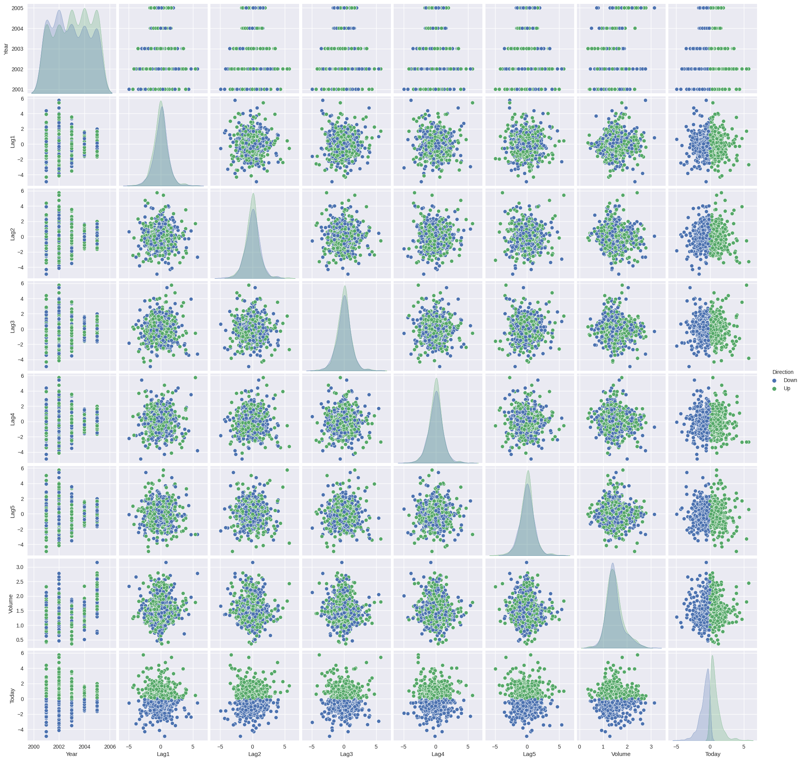
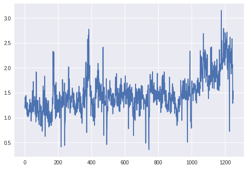
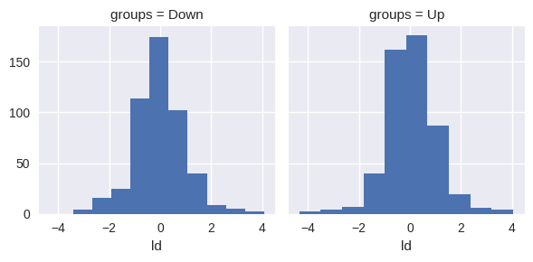

Lab 4.7: Classification Methods
Contents
Lab 4.7: Classification Methods¶
Original source: https://github.com/emredjan/ISL-python/blob/master/labs/lab_04.6_logistic_regression_lda_qda_knn.ipynb
Added in ISLRv2:
4.7.5 Naive Bayes
4.7.7 Poisson Regression
4.7.1 The Stock Market Data¶
import warnings
import numpy as np
import pandas as pd
import matplotlib.pyplot as plt
import seaborn as sns
warnings.filterwarnings("ignore")
%matplotlib inline
pd.set_option('precision', 2) # number precision for pandas
pd.set_option('display.max_rows', 12)
pd.set_option('display.float_format', '{:20,.2f}'.format) # get rid of scientific notation
plt.style.use('seaborn') # pretty matplotlib plots
---------------------------------------------------------------------------
OptionError Traceback (most recent call last)
Input In [1], in <module>
9 warnings.filterwarnings("ignore")
10 get_ipython().run_line_magic('matplotlib', 'inline')
---> 12 pd.set_option('precision', 2) # number precision for pandas
13 pd.set_option('display.max_rows', 12)
14 pd.set_option('display.float_format', '{:20,.2f}'.format) # get rid of scientific notation
File /opt/hostedtoolcache/Python/3.8.12/x64/lib/python3.8/site-packages/pandas/_config/config.py:256, in CallableDynamicDoc.__call__(self, *args, **kwds)
255 def __call__(self, *args, **kwds):
--> 256 return self.__func__(*args, **kwds)
File /opt/hostedtoolcache/Python/3.8.12/x64/lib/python3.8/site-packages/pandas/_config/config.py:149, in _set_option(*args, **kwargs)
146 raise TypeError(f'_set_option() got an unexpected keyword argument "{kwarg}"')
148 for k, v in zip(args[::2], args[1::2]):
--> 149 key = _get_single_key(k, silent)
151 o = _get_registered_option(key)
152 if o and o.validator:
File /opt/hostedtoolcache/Python/3.8.12/x64/lib/python3.8/site-packages/pandas/_config/config.py:116, in _get_single_key(pat, silent)
114 raise OptionError(f"No such keys(s): {repr(pat)}")
115 if len(keys) > 1:
--> 116 raise OptionError("Pattern matched multiple keys")
117 key = keys[0]
119 if not silent:
OptionError: 'Pattern matched multiple keys'
def make_prediction_summary(model, X):
"Generate prediction summary of stock market models using predict_proba method."
return pd.DataFrame(
{
"prob_0": model.predict_proba(X)[:, 0],
"prob_1": model.predict_proba(X)[:, 1],
"pred_class": model.predict(X),
},
columns=["prob_0", "prob_1", "pred_class"],
)
# load data
smarket = pd.read_csv('../datasets/Smarket.csv', index_col=0)
smarket.Direction = smarket.Direction.astype('category')
smarket
| Year | Lag1 | Lag2 | Lag3 | Lag4 | Lag5 | Volume | Today | Direction | |
|---|---|---|---|---|---|---|---|---|---|
| 1 | 2001 | 0.381 | -0.192 | -2.624 | -1.055 | 5.010 | 1.19130 | 0.959 | Up |
| 2 | 2001 | 0.959 | 0.381 | -0.192 | -2.624 | -1.055 | 1.29650 | 1.032 | Up |
| 3 | 2001 | 1.032 | 0.959 | 0.381 | -0.192 | -2.624 | 1.41120 | -0.623 | Down |
| 4 | 2001 | -0.623 | 1.032 | 0.959 | 0.381 | -0.192 | 1.27600 | 0.614 | Up |
| 5 | 2001 | 0.614 | -0.623 | 1.032 | 0.959 | 0.381 | 1.20570 | 0.213 | Up |
| ... | ... | ... | ... | ... | ... | ... | ... | ... | ... |
| 1246 | 2005 | 0.422 | 0.252 | -0.024 | -0.584 | -0.285 | 1.88850 | 0.043 | Up |
| 1247 | 2005 | 0.043 | 0.422 | 0.252 | -0.024 | -0.584 | 1.28581 | -0.955 | Down |
| 1248 | 2005 | -0.955 | 0.043 | 0.422 | 0.252 | -0.024 | 1.54047 | 0.130 | Up |
| 1249 | 2005 | 0.130 | -0.955 | 0.043 | 0.422 | 0.252 | 1.42236 | -0.298 | Down |
| 1250 | 2005 | -0.298 | 0.130 | -0.955 | 0.043 | 0.422 | 1.38254 | -0.489 | Down |
1250 rows × 9 columns
smarket.columns
Index(['Year', 'Lag1', 'Lag2', 'Lag3', 'Lag4', 'Lag5', 'Volume', 'Today',
'Direction'],
dtype='object')
smarket.shape
(1250, 9)
smarket.describe(include='all')
| Year | Lag1 | Lag2 | Lag3 | Lag4 | Lag5 | Volume | Today | Direction | |
|---|---|---|---|---|---|---|---|---|---|
| count | 1250.000000 | 1250.000000 | 1250.000000 | 1250.000000 | 1250.000000 | 1250.00000 | 1250.000000 | 1250.000000 | 1250 |
| unique | NaN | NaN | NaN | NaN | NaN | NaN | NaN | NaN | 2 |
| top | NaN | NaN | NaN | NaN | NaN | NaN | NaN | NaN | Up |
| freq | NaN | NaN | NaN | NaN | NaN | NaN | NaN | NaN | 648 |
| mean | 2003.016000 | 0.003834 | 0.003919 | 0.001716 | 0.001636 | 0.00561 | 1.478305 | 0.003138 | NaN |
| std | 1.409018 | 1.136299 | 1.136280 | 1.138703 | 1.138774 | 1.14755 | 0.360357 | 1.136334 | NaN |
| min | 2001.000000 | -4.922000 | -4.922000 | -4.922000 | -4.922000 | -4.92200 | 0.356070 | -4.922000 | NaN |
| 25% | 2002.000000 | -0.639500 | -0.639500 | -0.640000 | -0.640000 | -0.64000 | 1.257400 | -0.639500 | NaN |
| 50% | 2003.000000 | 0.039000 | 0.039000 | 0.038500 | 0.038500 | 0.03850 | 1.422950 | 0.038500 | NaN |
| 75% | 2004.000000 | 0.596750 | 0.596750 | 0.596750 | 0.596750 | 0.59700 | 1.641675 | 0.596750 | NaN |
| max | 2005.000000 | 5.733000 | 5.733000 | 5.733000 | 5.733000 | 5.73300 | 3.152470 | 5.733000 | NaN |
smarket.info(memory_usage='deep')
<class 'pandas.core.frame.DataFrame'>
Int64Index: 1250 entries, 1 to 1250
Data columns (total 9 columns):
# Column Non-Null Count Dtype
--- ------ -------------- -----
0 Year 1250 non-null int64
1 Lag1 1250 non-null float64
2 Lag2 1250 non-null float64
3 Lag3 1250 non-null float64
4 Lag4 1250 non-null float64
5 Lag5 1250 non-null float64
6 Volume 1250 non-null float64
7 Today 1250 non-null float64
8 Direction 1250 non-null category
dtypes: category(1), float64(7), int64(1)
memory usage: 89.3 KB
sns.pairplot(smarket, hue='Direction');

smarket.corr()
| Year | Lag1 | Lag2 | Lag3 | Lag4 | Lag5 | Volume | Today | |
|---|---|---|---|---|---|---|---|---|
| Year | 1.000000 | 0.029700 | 0.030596 | 0.033195 | 0.035689 | 0.029788 | 0.539006 | 0.030095 |
| Lag1 | 0.029700 | 1.000000 | -0.026294 | -0.010803 | -0.002986 | -0.005675 | 0.040910 | -0.026155 |
| Lag2 | 0.030596 | -0.026294 | 1.000000 | -0.025897 | -0.010854 | -0.003558 | -0.043383 | -0.010250 |
| Lag3 | 0.033195 | -0.010803 | -0.025897 | 1.000000 | -0.024051 | -0.018808 | -0.041824 | -0.002448 |
| Lag4 | 0.035689 | -0.002986 | -0.010854 | -0.024051 | 1.000000 | -0.027084 | -0.048414 | -0.006900 |
| Lag5 | 0.029788 | -0.005675 | -0.003558 | -0.018808 | -0.027084 | 1.000000 | -0.022002 | -0.034860 |
| Volume | 0.539006 | 0.040910 | -0.043383 | -0.041824 | -0.048414 | -0.022002 | 1.000000 | 0.014592 |
| Today | 0.030095 | -0.026155 | -0.010250 | -0.002448 | -0.006900 | -0.034860 | 0.014592 | 1.000000 |
plt.plot(smarket.Volume);

4.7.2 Logistic Regression¶
Using statsmodels¶
import statsmodels.api as sm
X_sm = smarket.loc[:,'Lag1':'Volume']
y_sm = pd.get_dummies(smarket.Direction).iloc[:, 1] # dummy encoding
glm_fit_sm = sm.Logit(y_sm, sm.add_constant(X_sm)).fit()
glm_fit_sm.summary()
Optimization terminated successfully.
Current function value: 2.197001
Iterations 4
/opt/hostedtoolcache/Python/3.8.12/x64/lib/python3.8/site-packages/statsmodels/base/model.py:547: HessianInversionWarning: Inverting hessian failed, no bse or cov_params available
warnings.warn('Inverting hessian failed, no bse or cov_params '
/opt/hostedtoolcache/Python/3.8.12/x64/lib/python3.8/site-packages/statsmodels/base/model.py:547: HessianInversionWarning: Inverting hessian failed, no bse or cov_params available
warnings.warn('Inverting hessian failed, no bse or cov_params '
| Dep. Variable: | Up | No. Observations: | 1250 |
|---|---|---|---|
| Model: | Logit | Df Residuals: | 1243 |
| Method: | MLE | Df Model: | 6 |
| Date: | Sun, 23 Jan 2022 | Pseudo R-squ.: | inf |
| Time: | 23:15:55 | Log-Likelihood: | -2746.3 |
| converged: | True | LL-Null: | 0.0000 |
| Covariance Type: | nonrobust | LLR p-value: | 1.000 |
| coef | std err | z | P>|z| | [0.025 | 0.975] | |
|---|---|---|---|---|---|---|
| const | -0.1260 | 0.241 | -0.523 | 0.601 | -0.598 | 0.346 |
| Lag1 | -0.0731 | 0.050 | -1.457 | 0.145 | -0.171 | 0.025 |
| Lag2 | -0.0423 | 0.050 | -0.845 | 0.398 | -0.140 | 0.056 |
| Lag3 | 0.0111 | 0.050 | 0.222 | 0.824 | -0.087 | 0.109 |
| Lag4 | 0.0094 | 0.050 | 0.187 | 0.851 | -0.089 | 0.107 |
| Lag5 | 0.0103 | 0.050 | 0.208 | 0.835 | -0.087 | 0.107 |
| Volume | 0.1354 | 0.158 | 0.855 | 0.392 | -0.175 | 0.446 |
glm_fit_sm.predict()
array([0.50708413, 0.48146788, 0.48113883, ..., 0.5392683 , 0.52611829,
0.51791656])
glm_fit_sm.pred_table()
array([[145., 457.],
[141., 507.]])
Using scikit-learn¶
from sklearn.linear_model import LogisticRegression
X_sk = smarket.loc[:,'Lag1':'Volume']
y_sk = smarket.Direction
glm_model = LogisticRegression(fit_intercept=True, C=1e9) # Large C for no regularization
glm_fit = glm_model.fit(X_sk, y_sk)
glm_fit.intercept_, glm_fit.coef_
(array([-0.12600781]),
array([[-0.07307339, -0.04230074, 0.01108552, 0.00935968, 0.01031339,
0.13544567]]))
make_prediction_summary(glm_fit, X_sk)
| prob_0 | prob_1 | pred_class | |
|---|---|---|---|
| 0 | 0.492916 | 0.507084 | Up |
| 1 | 0.518533 | 0.481467 | Down |
| 2 | 0.518861 | 0.481139 | Down |
| 3 | 0.484778 | 0.515222 | Up |
| 4 | 0.489219 | 0.510781 | Up |
| ... | ... | ... | ... |
| 1245 | 0.480107 | 0.519893 | Up |
| 1246 | 0.494075 | 0.505925 | Up |
| 1247 | 0.460732 | 0.539268 | Up |
| 1248 | 0.473882 | 0.526118 | Up |
| 1249 | 0.482084 | 0.517916 | Up |
1250 rows × 3 columns
from sklearn.metrics import confusion_matrix, accuracy_score
# labeled confusion matrix for predicted values
conf_m = pd.DataFrame(confusion_matrix(y_sk, glm_fit.predict(X_sk)))
conf_m.columns.name = 'Predicted'
conf_m.index.name = 'True'
conf_m
| Predicted | 0 | 1 |
|---|---|---|
| True | ||
| 0 | 145 | 457 |
| 1 | 141 | 507 |
print('Accuracy: ' + str(accuracy_score(y_sk, glm_fit.predict(X_sk))))
print('Training Error: ' + str(1 - accuracy_score(y_sk, glm_fit.predict(X_sk))))
Accuracy: 0.5216
Training Error: 0.47840000000000005
# separate training and test sets
train = smarket.loc[smarket.Year < 2005]
smarket_2005 = smarket.loc[smarket.Year >= 2005]
X_sk_train = train.loc[:,'Lag1':'Volume']
y_sk_train = train.Direction
X_sk_test = smarket_2005.loc[:,'Lag1':'Volume']
y_sk_test = smarket_2005.Direction
glm_model_t = LogisticRegression(fit_intercept=True, C=1e9) # Large C for no regularization
glm_fit_t = glm_model.fit(X_sk_train, y_sk_train)
make_prediction_summary(glm_fit_t, X_sk_test)
| prob_0 | prob_1 | pred_class | |
|---|---|---|---|
| 0 | 0.471780 | 0.528220 | Up |
| 1 | 0.484332 | 0.515668 | Up |
| 2 | 0.477348 | 0.522652 | Up |
| 3 | 0.486146 | 0.513854 | Up |
| 4 | 0.501665 | 0.498335 | Down |
| ... | ... | ... | ... |
| 247 | 0.516363 | 0.483637 | Down |
| 248 | 0.493951 | 0.506049 | Up |
| 249 | 0.483342 | 0.516658 | Up |
| 250 | 0.483876 | 0.516124 | Up |
| 251 | 0.491928 | 0.508072 | Up |
252 rows × 3 columns
conf_m = pd.DataFrame(confusion_matrix(y_sk_test, glm_fit.predict(X_sk_test)))
conf_m.columns.name = 'Predicted'
conf_m.index.name = 'True'
conf_m
| Predicted | 0 | 1 |
|---|---|---|
| True | ||
| 0 | 77 | 34 |
| 1 | 97 | 44 |
print('Accuracy: ' + str(accuracy_score(y_sk_test, glm_fit.predict(X_sk_test))))
print('Test Error: ' + str(1 - accuracy_score(y_sk_test, glm_fit.predict(X_sk_test))))
Accuracy: 0.4801587301587302
Test Error: 0.5198412698412698
X_sk_train_s = train.loc[:,'Lag1':'Lag2']
y_sk_train_s = train.Direction
X_sk_test_s = smarket_2005.loc[:,'Lag1':'Lag2']
y_sk_test_s = smarket_2005.Direction
glm_model_t_s = LogisticRegression(fit_intercept=True, C=1e9) # Large C for no regularization
glm_fit_t_s = glm_model.fit(X_sk_train_s, y_sk_train_s)
make_prediction_summary(glm_fit_t_s, X_sk_test_s)
| prob_0 | prob_1 | pred_class | |
|---|---|---|---|
| 0 | 0.490173 | 0.509827 | Up |
| 1 | 0.479180 | 0.520820 | Up |
| 2 | 0.466737 | 0.533263 | Up |
| 3 | 0.473935 | 0.526065 | Up |
| 4 | 0.492784 | 0.507216 | Up |
| ... | ... | ... | ... |
| 247 | 0.500615 | 0.499385 | Down |
| 248 | 0.497239 | 0.502761 | Up |
| 249 | 0.479163 | 0.520837 | Up |
| 250 | 0.483129 | 0.516871 | Up |
| 251 | 0.489252 | 0.510748 | Up |
252 rows × 3 columns
conf_m = pd.DataFrame(confusion_matrix(y_sk_test_s, glm_fit.predict(X_sk_test_s)))
conf_m.columns.name = 'Predicted'
conf_m.index.name = 'True'
conf_m
| Predicted | 0 | 1 |
|---|---|---|
| True | ||
| 0 | 35 | 76 |
| 1 | 35 | 106 |
print('Accuracy: ' + str(accuracy_score(y_sk_test_s, glm_fit.predict(X_sk_test_s))))
print('Test Error: ' + str(1 - accuracy_score(y_sk_test_s, glm_fit.predict(X_sk_test_s))))
Accuracy: 0.5595238095238095
Test Error: 0.44047619047619047
# predictions for arbitrary data
predict_data = pd.DataFrame({'Lag1': [1.2, 1.5], 'Lag2': [1.1, -0.8]})
glm_fit.predict_proba(predict_data)[:, 1]
array([0.47914604, 0.49611109])
4.7.3 Linear Discriminant Analysis¶
from sklearn.discriminant_analysis import LinearDiscriminantAnalysis
X_train = train.loc[:,'Lag1':'Lag2']
y_train = train.Direction
X_test = smarket_2005.loc[:,'Lag1':'Lag2']
y_test = smarket_2005.Direction
lda_model = LinearDiscriminantAnalysis()
lda_fit = lda_model.fit(X_train, y_train)
lda_fit.priors_ # group priors
array([0.49198397, 0.50801603])
lda_fit.means_ # group means
array([[ 0.04279022, 0.03389409],
[-0.03954635, -0.03132544]])
lda_fit.scalings_ # coefficients of ld
array([[-0.64201904],
[-0.51352928]])
# for plotting lda, needs imporovement
ld_sc = X_train.iloc[:, 0] * lda_fit.scalings_[0] + X_train.iloc[:, 1] * lda_fit.scalings_[1]
ld = pd.DataFrame({'groups': y_train, 'ld': ld_sc})
g = sns.FacetGrid(ld, col='groups')
g.map(plt.hist, 'ld');

# prediction summary
pd.DataFrame({'prob_0': lda_fit.predict_proba(X_test)[:, 0],
'prob_1': lda_fit.predict_proba(X_test)[:, 1],
'pred_class': lda_fit.predict(X_test)},
columns=['prob_0', 'prob_1', 'pred_class'])
| prob_0 | prob_1 | pred_class | |
|---|---|---|---|
| 0 | 0.490179 | 0.509821 | Up |
| 1 | 0.479218 | 0.520782 | Up |
| 2 | 0.466818 | 0.533182 | Up |
| 3 | 0.474001 | 0.525999 | Up |
| 4 | 0.492788 | 0.507212 | Up |
| ... | ... | ... | ... |
| 247 | 0.500589 | 0.499411 | Down |
| 248 | 0.497221 | 0.502779 | Up |
| 249 | 0.479199 | 0.520801 | Up |
| 250 | 0.483167 | 0.516833 | Up |
| 251 | 0.489259 | 0.510741 | Up |
252 rows × 3 columns
conf_m = pd.DataFrame(confusion_matrix(y_test, glm_fit.predict(X_test)))
conf_m.columns.name = 'Predicted'
conf_m.index.name = 'True'
conf_m
| Predicted | 0 | 1 |
|---|---|---|
| True | ||
| 0 | 35 | 76 |
| 1 | 35 | 106 |
4.7.4 Quadratic Discriminant Analysis¶
from sklearn.discriminant_analysis import QuadraticDiscriminantAnalysis
X_train = train.loc[:,'Lag1':'Lag2']
y_train = train.Direction
X_test = smarket_2005.loc[:,'Lag1':'Lag2']
y_test = smarket_2005.Direction
qda_model = QuadraticDiscriminantAnalysis()
qda_fit = qda_model.fit(X_train, y_train)
qda_fit.priors_ # group priors
array([0.49198397, 0.50801603])
qda_fit.means_ # group means
array([[ 0.04279022, 0.03389409],
[-0.03954635, -0.03132544]])
qda_fit.scalings_ # coefficients of ld
[array([1.56294495, 1.47927279]), array([1.53455065, 1.47272326])]
# prediction summary
pd.DataFrame({'prob_0': qda_fit.predict_proba(X_test)[:, 0],
'prob_1': qda_fit.predict_proba(X_test)[:, 1],
'pred_class': qda_fit.predict(X_test)},
columns=['prob_0', 'prob_1', 'pred_class'])
| prob_0 | prob_1 | pred_class | |
|---|---|---|---|
| 0 | 0.487324 | 0.512676 | Up |
| 1 | 0.475901 | 0.524099 | Up |
| 2 | 0.463691 | 0.536309 | Up |
| 3 | 0.473925 | 0.526075 | Up |
| 4 | 0.490343 | 0.509657 | Up |
| ... | ... | ... | ... |
| 247 | 0.497670 | 0.502330 | Up |
| 248 | 0.494787 | 0.505213 | Up |
| 249 | 0.475864 | 0.524136 | Up |
| 250 | 0.482695 | 0.517305 | Up |
| 251 | 0.486446 | 0.513554 | Up |
252 rows × 3 columns
conf_m = pd.DataFrame(confusion_matrix(y_test, qda_fit.predict(X_test)))
conf_m.columns.name = 'Predicted'
conf_m.index.name = 'True'
conf_m
| Predicted | 0 | 1 |
|---|---|---|
| True | ||
| 0 | 30 | 81 |
| 1 | 20 | 121 |
print(f'Accuracy: {accuracy_score(y_test, qda_fit.predict(X_test)):.3f}')
print(f'Test Error: {1 - accuracy_score(y_test, qda_fit.predict(X_test)):.3f}')
Accuracy: 0.599
Test Error: 0.401
4.7.5 Naive Bayes¶
from sklearn.naive_bayes import GaussianNB
X_train = train.loc[:,'Lag1':'Lag2']
y_train = train.Direction
X_test = smarket_2005.loc[:,'Lag1':'Lag2']
y_test = smarket_2005.Direction
nb_model = GaussianNB()
nb_fit = nb_model.fit(X_train, y_train)
make_prediction_summary(nb_fit, X_test)
| prob_0 | prob_1 | pred_class | |
|---|---|---|---|
| 0 | 0.487329 | 0.512671 | Up |
| 1 | 0.476236 | 0.523764 | Up |
| 2 | 0.465295 | 0.534705 | Up |
| 3 | 0.474845 | 0.525155 | Up |
| 4 | 0.490206 | 0.509794 | Up |
| ... | ... | ... | ... |
| 247 | 0.497612 | 0.502388 | Up |
| 248 | 0.494660 | 0.505340 | Up |
| 249 | 0.476011 | 0.523989 | Up |
| 250 | 0.482798 | 0.517202 | Up |
| 251 | 0.486410 | 0.513590 | Up |
252 rows × 3 columns
print(f'Accuracy: {accuracy_score(y_test, nb_fit.predict(X_test)):.3f}')
print(f'Test Error: {1 - accuracy_score(y_test, nb_fit.predict(X_test)):.3f}')
Accuracy: 0.595
Test Error: 0.405
4.7.6 K-Nearest Neighbors¶
Stock market data¶
from sklearn.neighbors import KNeighborsClassifier
X_train = train.loc[:,'Lag1':'Lag2']
y_train = train.Direction
X_test = smarket_2005.loc[:,'Lag1':'Lag2']
y_test = smarket_2005.Direction
knn_model = KNeighborsClassifier(n_neighbors=1)
knn_fit = knn_model.fit(X_train, y_train)
make_prediction_summary(knn_fit, X_test)
| prob_0 | prob_1 | pred_class | |
|---|---|---|---|
| 0 | 0.0 | 1.0 | Up |
| 1 | 1.0 | 0.0 | Down |
| 2 | 0.0 | 1.0 | Up |
| 3 | 0.0 | 1.0 | Up |
| 4 | 0.0 | 1.0 | Up |
| ... | ... | ... | ... |
| 247 | 1.0 | 0.0 | Down |
| 248 | 1.0 | 0.0 | Down |
| 249 | 0.0 | 1.0 | Up |
| 250 | 1.0 | 0.0 | Down |
| 251 | 0.0 | 1.0 | Up |
252 rows × 3 columns
conf_m = pd.DataFrame(confusion_matrix(y_test, knn_fit.predict(X_test)))
conf_m.columns.name = 'Predicted'
conf_m.index.name = 'True'
conf_m
| Predicted | 0 | 1 |
|---|---|---|
| True | ||
| 0 | 43 | 68 |
| 1 | 58 | 83 |
print('Accuracy: ' + str(accuracy_score(y_test, knn_fit.predict(X_test))))
print('Test Error: ' + str(1 - accuracy_score(y_test, knn_fit.predict(X_test))))
Accuracy: 0.5
Test Error: 0.5
knn_model_3 = KNeighborsClassifier(n_neighbors=3)
knn_fit_3 = knn_model_3.fit(X_train, y_train)
conf_m = pd.DataFrame(confusion_matrix(y_test, knn_fit_3.predict(X_test)))
conf_m.columns.name = 'Predicted'
conf_m.index.name = 'True'
conf_m
| Predicted | 0 | 1 |
|---|---|---|
| True | ||
| 0 | 48 | 63 |
| 1 | 55 | 86 |
print(f'Accuracy: {accuracy_score(y_test, knn_fit_3.predict(X_test)):.3f}')
print(f'Test Error: {1 - accuracy_score(y_test, knn_fit_3.predict(X_test)):.3f}')
Accuracy: 0.532
Test Error: 0.468
Caravan insurance data¶
# load data
caravan = pd.read_csv('../datasets/Caravan.csv', index_col=0)
caravan.Purchase = caravan.Purchase.astype('category')
caravan
| MOSTYPE | MAANTHUI | MGEMOMV | MGEMLEEF | MOSHOOFD | MGODRK | MGODPR | MGODOV | MGODGE | MRELGE | ... | APERSONG | AGEZONG | AWAOREG | ABRAND | AZEILPL | APLEZIER | AFIETS | AINBOED | ABYSTAND | Purchase | |
|---|---|---|---|---|---|---|---|---|---|---|---|---|---|---|---|---|---|---|---|---|---|
| 1 | 33 | 1 | 3 | 2 | 8 | 0 | 5 | 1 | 3 | 7 | ... | 0 | 0 | 0 | 1 | 0 | 0 | 0 | 0 | 0 | No |
| 2 | 37 | 1 | 2 | 2 | 8 | 1 | 4 | 1 | 4 | 6 | ... | 0 | 0 | 0 | 1 | 0 | 0 | 0 | 0 | 0 | No |
| 3 | 37 | 1 | 2 | 2 | 8 | 0 | 4 | 2 | 4 | 3 | ... | 0 | 0 | 0 | 1 | 0 | 0 | 0 | 0 | 0 | No |
| 4 | 9 | 1 | 3 | 3 | 3 | 2 | 3 | 2 | 4 | 5 | ... | 0 | 0 | 0 | 1 | 0 | 0 | 0 | 0 | 0 | No |
| 5 | 40 | 1 | 4 | 2 | 10 | 1 | 4 | 1 | 4 | 7 | ... | 0 | 0 | 0 | 1 | 0 | 0 | 0 | 0 | 0 | No |
| ... | ... | ... | ... | ... | ... | ... | ... | ... | ... | ... | ... | ... | ... | ... | ... | ... | ... | ... | ... | ... | ... |
| 5818 | 36 | 1 | 1 | 2 | 8 | 0 | 6 | 1 | 2 | 1 | ... | 0 | 0 | 0 | 1 | 0 | 0 | 0 | 0 | 0 | No |
| 5819 | 35 | 1 | 4 | 4 | 8 | 1 | 4 | 1 | 4 | 6 | ... | 0 | 0 | 0 | 1 | 0 | 0 | 0 | 0 | 0 | No |
| 5820 | 33 | 1 | 3 | 4 | 8 | 0 | 6 | 0 | 3 | 5 | ... | 0 | 0 | 0 | 1 | 0 | 0 | 0 | 0 | 0 | Yes |
| 5821 | 34 | 1 | 3 | 2 | 8 | 0 | 7 | 0 | 2 | 7 | ... | 0 | 0 | 0 | 0 | 0 | 0 | 0 | 0 | 0 | No |
| 5822 | 33 | 1 | 3 | 3 | 8 | 0 | 6 | 1 | 2 | 7 | ... | 0 | 0 | 0 | 0 | 0 | 0 | 0 | 0 | 0 | No |
5822 rows × 86 columns
caravan.info(memory_usage='deep')
<class 'pandas.core.frame.DataFrame'>
Int64Index: 5822 entries, 1 to 5822
Data columns (total 86 columns):
# Column Non-Null Count Dtype
--- ------ -------------- -----
0 MOSTYPE 5822 non-null int64
1 MAANTHUI 5822 non-null int64
2 MGEMOMV 5822 non-null int64
3 MGEMLEEF 5822 non-null int64
4 MOSHOOFD 5822 non-null int64
5 MGODRK 5822 non-null int64
6 MGODPR 5822 non-null int64
7 MGODOV 5822 non-null int64
8 MGODGE 5822 non-null int64
9 MRELGE 5822 non-null int64
10 MRELSA 5822 non-null int64
11 MRELOV 5822 non-null int64
12 MFALLEEN 5822 non-null int64
13 MFGEKIND 5822 non-null int64
14 MFWEKIND 5822 non-null int64
15 MOPLHOOG 5822 non-null int64
16 MOPLMIDD 5822 non-null int64
17 MOPLLAAG 5822 non-null int64
18 MBERHOOG 5822 non-null int64
19 MBERZELF 5822 non-null int64
20 MBERBOER 5822 non-null int64
21 MBERMIDD 5822 non-null int64
22 MBERARBG 5822 non-null int64
23 MBERARBO 5822 non-null int64
24 MSKA 5822 non-null int64
25 MSKB1 5822 non-null int64
26 MSKB2 5822 non-null int64
27 MSKC 5822 non-null int64
28 MSKD 5822 non-null int64
29 MHHUUR 5822 non-null int64
30 MHKOOP 5822 non-null int64
31 MAUT1 5822 non-null int64
32 MAUT2 5822 non-null int64
33 MAUT0 5822 non-null int64
34 MZFONDS 5822 non-null int64
35 MZPART 5822 non-null int64
36 MINKM30 5822 non-null int64
37 MINK3045 5822 non-null int64
38 MINK4575 5822 non-null int64
39 MINK7512 5822 non-null int64
40 MINK123M 5822 non-null int64
41 MINKGEM 5822 non-null int64
42 MKOOPKLA 5822 non-null int64
43 PWAPART 5822 non-null int64
44 PWABEDR 5822 non-null int64
45 PWALAND 5822 non-null int64
46 PPERSAUT 5822 non-null int64
47 PBESAUT 5822 non-null int64
48 PMOTSCO 5822 non-null int64
49 PVRAAUT 5822 non-null int64
50 PAANHANG 5822 non-null int64
51 PTRACTOR 5822 non-null int64
52 PWERKT 5822 non-null int64
53 PBROM 5822 non-null int64
54 PLEVEN 5822 non-null int64
55 PPERSONG 5822 non-null int64
56 PGEZONG 5822 non-null int64
57 PWAOREG 5822 non-null int64
58 PBRAND 5822 non-null int64
59 PZEILPL 5822 non-null int64
60 PPLEZIER 5822 non-null int64
61 PFIETS 5822 non-null int64
62 PINBOED 5822 non-null int64
63 PBYSTAND 5822 non-null int64
64 AWAPART 5822 non-null int64
65 AWABEDR 5822 non-null int64
66 AWALAND 5822 non-null int64
67 APERSAUT 5822 non-null int64
68 ABESAUT 5822 non-null int64
69 AMOTSCO 5822 non-null int64
70 AVRAAUT 5822 non-null int64
71 AAANHANG 5822 non-null int64
72 ATRACTOR 5822 non-null int64
73 AWERKT 5822 non-null int64
74 ABROM 5822 non-null int64
75 ALEVEN 5822 non-null int64
76 APERSONG 5822 non-null int64
77 AGEZONG 5822 non-null int64
78 AWAOREG 5822 non-null int64
79 ABRAND 5822 non-null int64
80 AZEILPL 5822 non-null int64
81 APLEZIER 5822 non-null int64
82 AFIETS 5822 non-null int64
83 AINBOED 5822 non-null int64
84 ABYSTAND 5822 non-null int64
85 Purchase 5822 non-null category
dtypes: category(1), int64(85)
memory usage: 3.8 MB
caravan.Purchase.value_counts()
No 5474
Yes 348
Name: Purchase, dtype: int64
caravan.Purchase.value_counts()['Yes']/len(caravan)
0.05977327378907592
from scipy.stats import zscore
X = caravan.iloc[:, 0:85].apply(zscore) # standardize for KNN
y = caravan.Purchase
X_train = X.loc[1001:]
y_train = y.loc[1001:]
X_test = X.loc[:1000]
y_test = y.loc[:1000]
knn_model = KNeighborsClassifier(n_neighbors=1)
knn_fit = knn_model.fit(X_train, y_train)
conf_m = pd.DataFrame(confusion_matrix(y_test, knn_fit.predict(X_test)))
conf_m.columns.name = 'Predicted'
conf_m.index.name = 'True'
conf_m
| Predicted | 0 | 1 |
|---|---|---|
| True | ||
| 0 | 873 | 68 |
| 1 | 50 | 9 |
print(f'Accuracy: {accuracy_score(y_test, knn_fit.predict(X_test)):.3f}')
print(f'Test Error: {1 - accuracy_score(y_test, knn_fit.predict(X_test)):.3f}')
Accuracy: 0.882
Test Error: 0.118
from sklearn.metrics import precision_score
print('Precision for \'Yes\': ' + str(precision_score(y_test, knn_fit.predict(X_test), pos_label='Yes')))
Precision for 'Yes': 0.11688311688311688
knn_model = KNeighborsClassifier(n_neighbors=3)
knn_fit3 = knn_model.fit(X_train, y_train)
print('Precision for \'Yes\': ' + str(precision_score(y_test, knn_fit3.predict(X_test), pos_label='Yes')))
Precision for 'Yes': 0.2
knn_model = KNeighborsClassifier(n_neighbors=5)
knn_fit5 = knn_model.fit(X_train, y_train)
print('Precision for \'Yes\': ' + str(precision_score(y_test, knn_fit5.predict(X_test), pos_label='Yes')))
Precision for 'Yes': 0.26666666666666666
glm_model = LogisticRegression(fit_intercept=True, C=1e9) # Large C for no regularization
glm_fit = glm_model.fit(X_train, y_train)
glm_pred_50 = pd.Series(glm_fit.predict_proba(X_test)[:, 1] > 0.5).map({False: 'No', True: 'Yes'})
conf_m = pd.DataFrame(confusion_matrix(y_test, glm_pred_50))
conf_m.columns.name = 'Predicted'
conf_m.index.name = 'True'
conf_m
| Predicted | 0 | 1 |
|---|---|---|
| True | ||
| 0 | 935 | 6 |
| 1 | 59 | 0 |
print('Precision for \'Yes\': ' + str(precision_score(y_test, glm_pred_50, pos_label='Yes')))
Precision for 'Yes': 0.0
glm_pred_25 = pd.Series(glm_fit.predict_proba(X_test)[:, 1] > 0.25).map({False: 'No', True: 'Yes'})
conf_m = pd.DataFrame(confusion_matrix(y_test, glm_pred_25))
conf_m.columns.name = 'Predicted'
conf_m.index.name = 'True'
conf_m
| Predicted | 0 | 1 |
|---|---|---|
| True | ||
| 0 | 918 | 23 |
| 1 | 48 | 11 |
print('Precision for \'Yes\': ' + str(precision_score(y_test, glm_pred_25, pos_label='Yes')))
Precision for 'Yes': 0.3235294117647059